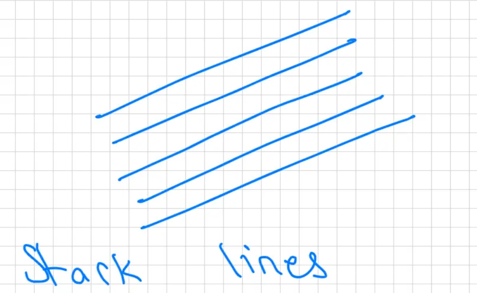
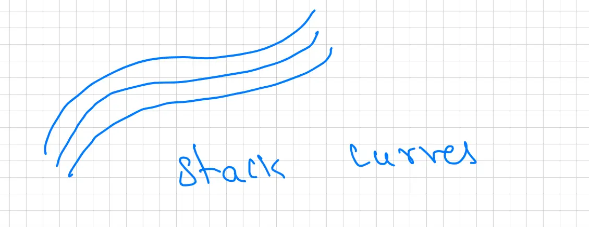

Lesson 31: Surface integrals - I \(17.6\)
Warmup: What is a surface?

Visual Description:
Conceptual diagram titled 'stack lines' showing five parallel blue line segments slanted diagonally upwards from left to right. It illustrates the idea that a surface can be visualized as a continuous stack of individual lines.

Visual Description:
Conceptual diagram titled 'stack curves' showing three parallel blue wavy curves stacked vertically. This represents the concept of a surface being formed by a continuous sequence of curves.
stack lines stack curves
eg: plane, sphere, cone, paraboloid
![A collection of four hand-drawn sketches illustrating common mathematical surfaces. Top left: A plane represented as a tilted blue parallelogram with parallel hatching lines. Bottom left: A sphere shown as a circle with horizontal elliptical cross-sections (solid lines in front, dashed in back). Bottom center: An inverted cone with its vertex at the bottom and horizontal circular slices drawn inside. Bottom right: An upward-opening paraboloid (bowl shape) with horizontal circular cross-sections used to indicate its three-dimensional volume.](img/lesson-31-3.webp)
Visual Description:
A collection of four hand-drawn sketches illustrating common mathematical surfaces. Top left: A plane represented as a tilted blue parallelogram with parallel hatching lines. Bottom left: A sphere shown as a circle with horizontal elliptical cross-sections (solid lines in front, dashed in back). Bottom center: An inverted cone with its vertex at the bottom and horizontal circular slices drawn inside. Bottom right: An upward-opening paraboloid (bowl shape) with horizontal circular cross-sections used to indicate its three-dimensional volume.
![A conceptual diagram illustrating the mapping of a parametric curve from a 1D domain to 3D space. At the top, a horizontal line represents the parameter 't' axis, with a segment bounded by points 'a' and 'b'. Below this is a 3D Cartesian coordinate system with three axes. Three color-coded arrows (purple, green, and red) demonstrate the mapping from the 1D parameter space to 3D space: the purple arrow maps point 'a' to the starting point of a blue curve; the red arrow maps point 'b' to the ending point of the curve; and the green arrow maps an intermediate point 't' to a specific point on the curve labeled \vec{r}(t). This visualizes how a single parameter defines a path in space.](img/lesson-31-4.webp)
![A conceptual diagram illustrating the mapping of a parametric surface from a 2D domain to 3D space. At the top, a 2D Cartesian plane with axes labeled 'u' and 'v' contains an irregular shaded region labeled 'R'. Below this is a 3D Cartesian coordinate system. Three color-coded arrows (purple, green, and red) map representative points from within the 2D region 'R' down to corresponding points on a blue shaded surface labeled 'S' in the 3D space. This visualizes the transformation of a 2D parameter area into a curved 3D surface where each point on the surface is determined by a unique pair of parameters (u, v).](img/lesson-31-5.webp)


![A mapping diagram illustrating the relationship between the parameter domain and the resulting surface section. On the left, a 2D graph in the \(uv\)-plane shows an annular region (a ring) centered at the origin, shaded with blue diagonal lines and labeled \(R\). The boundaries of this region correspond to \(u^2 + v^2 = 1\) and \(u^2 + v^2 = 9\). On the right, a 3D graph shows the section of the paraboloid \(z = x^2 + y^2\) that lies between \(z=1\) and \(z=9\), also shaded with blue diagonal lines and labeled \(S\). A red curved arrow points from the region \(R\) in the \(uv\)-plane to the surface \(S\) in 3D space, demonstrating how the 2D region is mapped onto the 3D surface.](img/lesson-31-10.webp)
![A two-part diagram illustrating the mapping from parameter space to 3D space. On the left, there is a 2D coordinate system with axes u and v. A line segment is drawn between (3,0) on the u-axis and (0,4) on the v-axis, labeled with the equation 4u + 3v = 12. The triangular region bounded by the u-axis, v-axis, and this line is shaded with blue diagonal lines and labeled 'R'. On the right, there is a 3D coordinate system showing a triangular surface 'S' in the first octant. The vertices of this triangle are at (3,0,0) on the x-axis, (0,4,0) on the y-axis, and (0,0,12) on the z-axis. A large red arrow points from the shaded region R in the 2D plane to the surface S in the 3D space, representing the vector-valued function r(u,v).](img/lesson-31-11.webp)
![A 3D Cartesian coordinate system diagram illustrating the relationship between Cartesian (x, y, z) and spherical coordinates (rho, phi, theta). A vector of length rho extends from the origin to a point labeled (x, y, z). The angle phi is shown as the angle between the positive z-axis and the vector. The angle theta is shown in the xy-plane, measured from the positive x-axis to the projection of the vector onto that plane. Dashed lines illustrate the projection of the point onto the z-axis and the xy-plane to show the geometric components used in the conversion formulas.](img/lesson-31-12.webp)


![A technical diagram illustrating the parametrization mapping of a surface. On the left, there is a 2D graph of the region R in the uv-plane. It shows a right-angled triangle in the first quadrant shaded with blue diagonal lines. The vertices of the triangle are at the origin (0,0), on the u-axis at (3,0), and on the v-axis at (0,4). The hypotenuse is labeled with the equation 4u + 3v = 12. On the right, there is a 3D coordinate system showing the triangular surface S in the first octant of xyz-space. A red curved arrow labeled r(u,v) points from the region R in the uv-plane to the surface S in the 3D space, indicating the transformation between the parameter space and the physical surface.](img/lesson-31-15.webp)